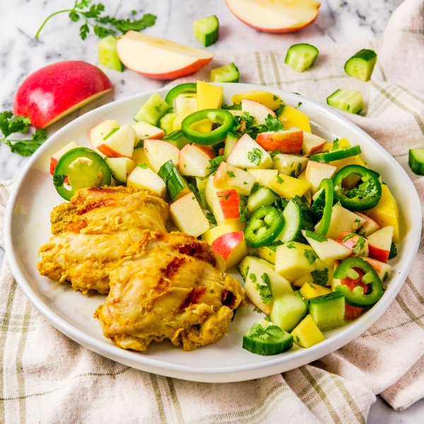

Grilled Curry Chicken with Spicy Apple, Mango & Cucumber Salad

Prep Time
35 min
Nutrition (per serving)
624.2 kcalCalories
51.2 gProtein
59.1 gCarbs
22.5 gFat
Full nutrition table
| Calories | 624.2 kcal |
| Total fat | 22.5 g |
| Saturated fat | 4.4 g |
| Trans fat | 0.1 g |
| Cholesterol | 214.7 mg |
| Sodium | 243.8 mg |
| Carbohydrates | 59.1 g |
| Fiber | 9.3 g |
| Sugars | 45 g |
| Protein | 51.2 g |
| Potassium | 1346.9 mg |
| Calcium | 118.5 mg |
| Iron | 3.4 mg |
| Vitamin A | 267.2 IU |
| Vitamin C | 90.9 mg |
| Vitamin D | 2.3 IU |
Cookware
Ingredients
- 2 lbchicken thighs, boneless skinless
- 1 small bunchcilantro
- 1English cucumber
- 4Gala apples
- 2 clovesgarlic
- 2 (1 inch) piecesginger root
- 2jalapeño peppers
- 1lemon
- 2mangoes
- ½ cupplain Greek yogurt
- black pepper
- curry powder
- extra virgin olive oil
- garam masala
- salt
Steps
- Wash and dry the fresh produce.1 lemon
2 (1 inch) pieces ginger root
2 mangoes
4 Gala apples
1 English cucumber
2 jalapeño peppers
1 small bunch cilantro - Zest lemon into a medium bowl. (Reserve lemon for later use.)
- Peel and mince ginger and garlic. Add to the bowl with the lemon zest, along with yogurt and spices. Whisk to combine the marinade.2 cloves garlic
½ cup plain Greek yogurt
2 tsp garam masala
2 tsp curry powder
1 tsp salt - Pat chicken thighs dry with paper towels. Add to the bowl with the marinade and, using your hands, toss to coat.2 lb chicken thighs, boneless skinless
- Preheat a grill pan, outdoor grill, or regular skillet over medium-high heat.
- While the pan heats up, juice reserved lemon into a clean medium bowl. Add oil, salt, and pepper, then whisk to combine the dressing.2 tbsp extra virgin olive oil
½ tsp salt
½ tsp black pepper - Once the grill pan is hot, coat with oil. Add chicken and grill until charred and cooked through, 3-4 minutes per side. Remove from heat.4 tsp extra virgin olive oil
- Meanwhile, peel mangos and slice flesh away from the pits, starting with the flat sides; roughly chop the flesh. Add to the bowl with the dressing.
- Quarter, core, and medium dice apples. Add to the bowl.
- Trim and quarter cucumber lengthwise, then cut crosswise into bite-sized pieces. Add to the bowl.
- Thinly slice jalapeño peppers into rings; seed and remove ribs with a spoon to reduce spice level. Add to the bowl. (Be careful with jalapeños; do not touch your eyes and ensure you wash your hands after handling or wear gloves while preparing.)
- Shave cilantro leaves off the stems; discard stems and roughly chop the leaves. Add to the bowl and stir to combine the salad.
- To serve, divide grilled chicken and salad between plates. Enjoy!